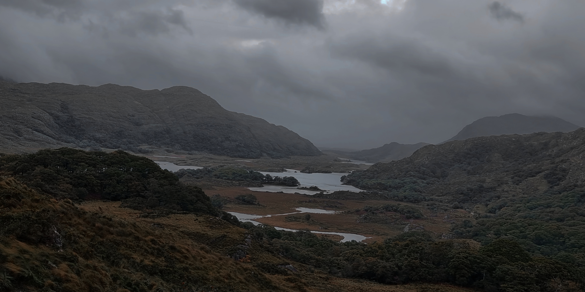
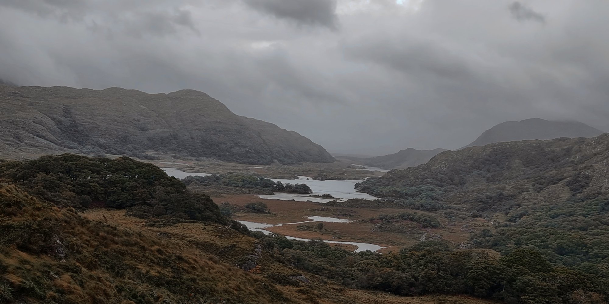
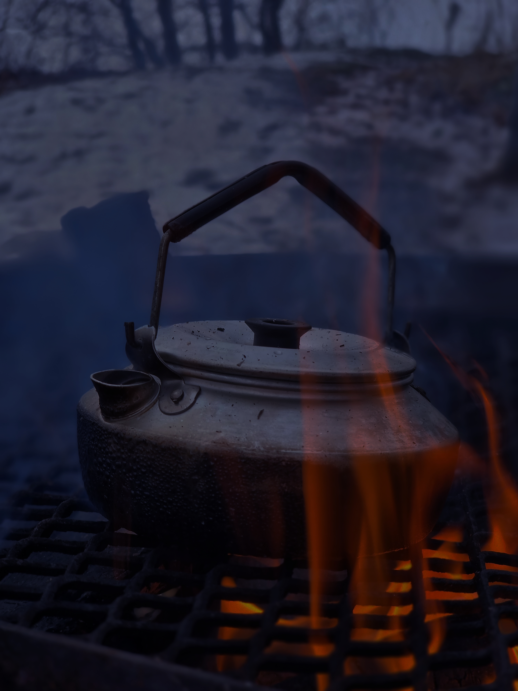
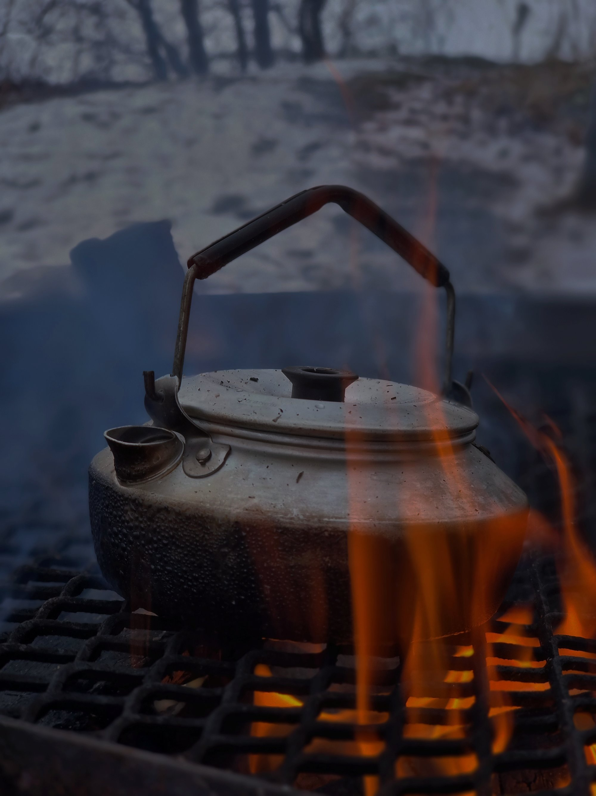
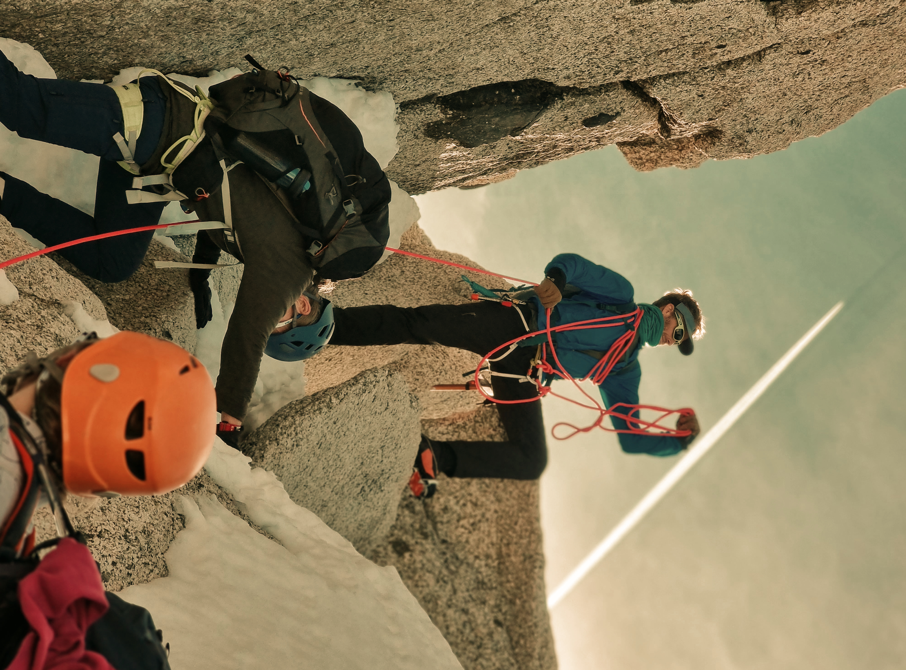
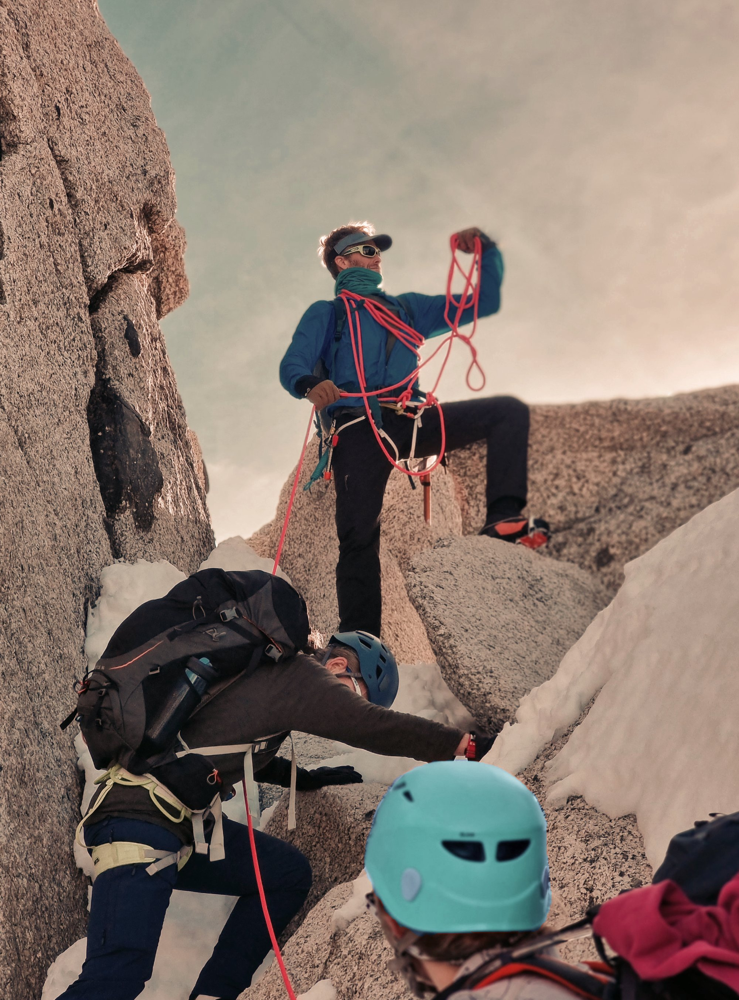

Bildredigering
Här kommer jag att visa tre bilder före och efter redigering i Photopea och beskriva vilka ändringar jag gjort.
Bild 1 - Dimmiga berg och sjöar
Före redigering

Efter redigering

Bilden har ljusats upp med justeringslagret Kurvor för att detaljer i marken och bergen ska framträda tydligare. Färgbalansen har även justerats för att skapa lite varmare toner, men bilden behåller fortfarande den dimmiga stämningen.
Bild 2 - Kaffepanna
Före redigering

Efter redigering

Kaffepannan har ljusats upp för att göra detaljerna synligare. Jag har även ändrat färgbalansen för att minska den blåa tonen som bilden hade tidigare.
Bild 3 - Bergsklättrare
Före redigering

Efter redigering

Denna bilden har jag justerat ljus, färgbalans för att göra snön mer naturlig, samt roterat bilden. Den oranga hjälmen har jag ändrat färgen på med hjälp av en lagermask och Nyans/Mättnad. Jag plockade även bort den vita strimman med Smart lagning.